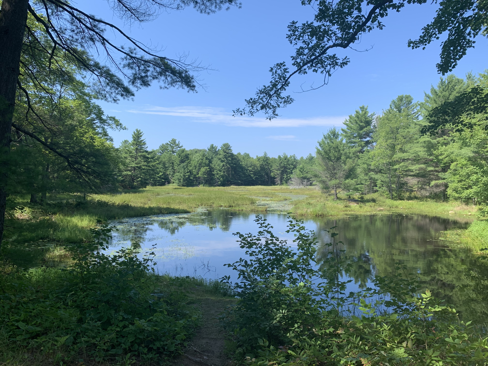
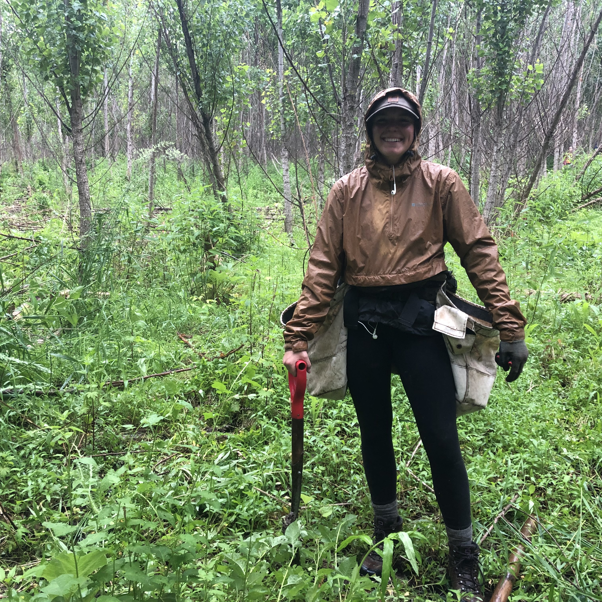

Home
Ontario Parks - Summer 2018/ Summer 2020
Riley spent two summers working at Six Mile Lake Provincial Park. The first summer was an incredible learning experience.
Riley's role as a Park Ranger in 2018 taught her many different skills outlined below:
- Processed camping resverations
- Used outstanding cutstomer servcie skills to provide information about Park to guests
- Provided techncial support
- Preformed general indoor maintenance tasks

In the summer of 2020, Riley was appointed a new position at Six Mile Lake; a Day Ranger. This position was brand new and Riley had to mould the duties and daily tasks within the position. The main goal for a Day Ranger
was to assist all departments as needed, and with 2020 being such a special senario, there were endless opportunities for assistance. Riley took this as an opportuntiy to display her leadership skills and made herself an asset to the park.
The duties of a Day Ranger are otulined below:
-Outdoor general maintenance
-Trail maintenance
-Administrative tasks
-Assitance to enforcement
Brinkman & Associates - Summer 2019
Riley spent one summer working for Brinkman & Associates throughout southern Ontario. This position provided her with experience tree planting and herbicide application. Riley has exeprience working outdoors in a variety of conditions and landscapes.
Riley's experience with Brinkman taught her many different skills outlined below:
- Planted trees
- Applied herbicides through various techniques
- Met client's strict quality standards
- Navigation with Avenza
